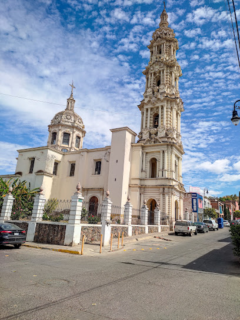
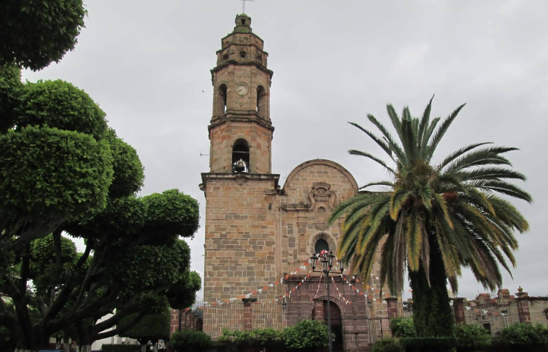

Religión
En Cuquío la religión es algo que se vive mucho. Y es muy importante en la vida de cada una de las personas que la practican.
La mayoría son católicos y desde chiquitos se les enseña a ir a misa, rezar y participar en las fiestas del pueblo.
Es algo normal y parte de lo que son.
La iglesia principal se llama San Felipe Apóstol y está en el centro.
Ahí se realizan algunos eventos: misas, bodas, bautizos, entre otros, y cuando llegan las fiestas patronales, todo el pueblo se junta.
Hay música, procesiones, comida rica y un ambiente agradable.
Cuquío el lugar de origen de santos y mártires de la época de la Guerra Cristera, como San Atilano Cruz y San Justino Orona, celebra festividades religiosas importantes, como las fiestas de la Virgen de Guadalupe y las fiestas patronales de San Felipe Apósto

